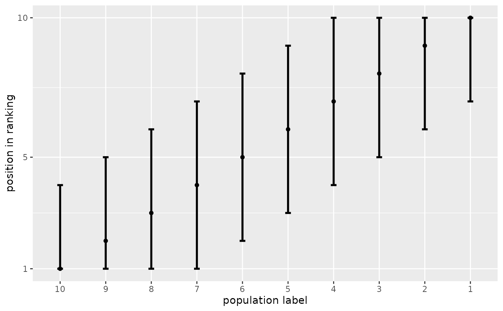
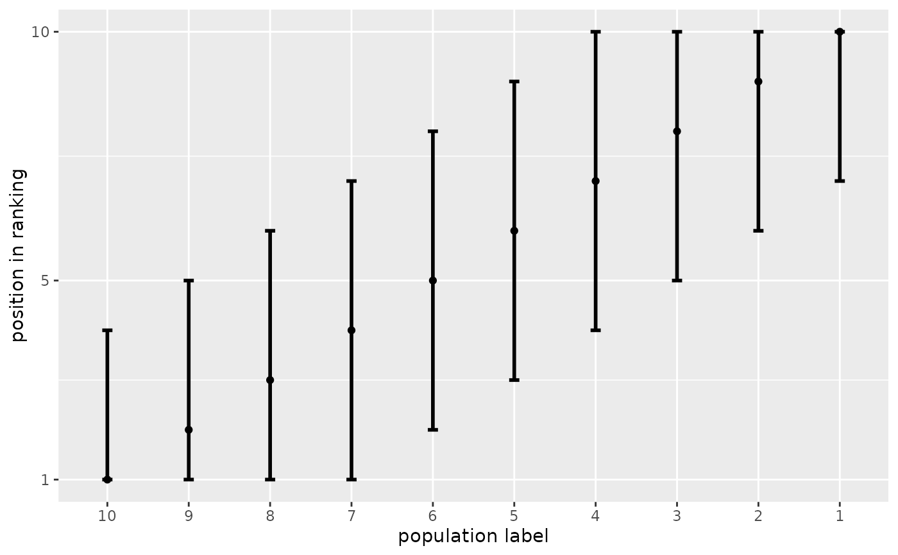

Display ranks together with their confidence set bounds.
# S3 method for csranks
plot(x, ...)
plotranking(
ranks,
L,
U,
popnames = NULL,
title = NULL,
subtitle = NULL,
caption = NULL,
colorbins = 1,
horizontal = TRUE
)Arguments
- x
An
csranksobject, likely produced bycsranks.- ...
Other arguments, passed to
plotranking.- ranks
vector of ranks
- L
vector of lower bounds of confidence sets for the ranks
- U
vector of lower bounds of confidence sets for the ranks
- popnames
vector containing names of the populations whose ranks are in
ranks. Ifpopnames=NULL(default), then populations are automatically numbered.- title
character string containing the main title of the graph.
title=NULL(default) means no title.- subtitle
character string containing the subtitle of the graph.
subtitle=NULL(default) means no subtitle.- caption
character string containing the caption of the graph.
caption=NULL(default) means no caption.- colorbins
integer indicating the number of quantile bins into which populations are grouped and color-coded. Value has to lie between 1 (default) and the number of populations.
- horizontal
logical. Should be the bars displayed horizontally, or vertically?
Value
A ggplot plot displaying confidence sets.
Functions
plot(csranks): Plotcsranksoutput
Examples
x <- seq(1, 3, length = 10)
V <- diag(rep(0.04, 10))
CS <- csranks(x, V)
grid::current.viewport()
#> viewport[ROOT]
plot(CS)
 # Equivalent:
plotranking(CS$rank, CS$L, CS$U)
# Equivalent:
plotranking(CS$rank, CS$L, CS$U)
 # plotranking returns a ggplot object. It can be customized further:
library(ggplot2)
pl <- plot(CS)
pl + xlab("position in ranking") + ylab("population label") + theme_gray()
# horizontal = FALSE uses ggplot2::coord_flip underneath. The x and y axes swap places.
pl <- plot(CS, horizontal = FALSE)
pl + xlab("position in ranking") + # Note, that xlab refers to vertical axis now
ylab("population label") + theme_gray()

# plotranking returns a ggplot object. It can be customized further:
library(ggplot2)
pl <- plot(CS)
pl + xlab("position in ranking") + ylab("population label") + theme_gray()
# horizontal = FALSE uses ggplot2::coord_flip underneath. The x and y axes swap places.
pl <- plot(CS, horizontal = FALSE)
pl + xlab("position in ranking") + # Note, that xlab refers to vertical axis now
ylab("population label") + theme_gray()
